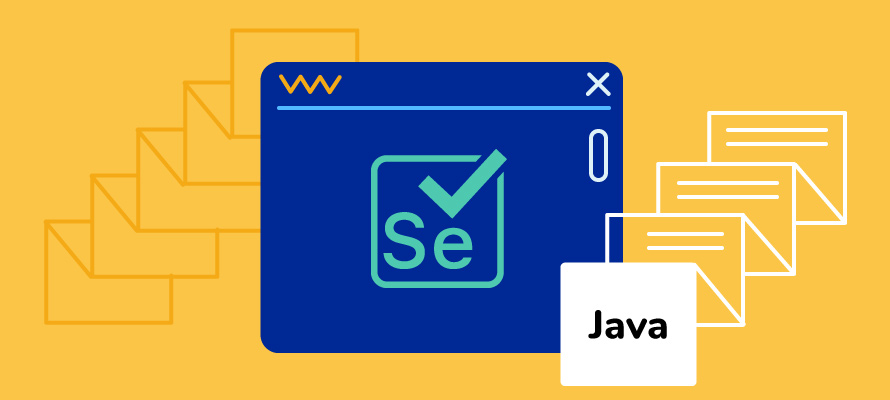

Test Automation

I've spent 10+ years building test automation from the ground up — web, mobile, and API — across startups and enterprise environments. I don't just write scripts; I design frameworks that teams can actually maintain and build on.
What I've built
- Built LaunchPad's entire automated regression suite from scratch — ~200 test cases covering ~80% of regression scope — cutting regression cycle time from 2–3 days to under 3 hours (~93% reduction).
- Grew into Automation Lead, setting standards, running code reviews, and mentoring QA engineers across the team.
- Led automation migration when LaunchPad was acquired by Harver — one of two employees retained post-acquisition specifically to preserve the automation investment.
- Currently maintaining and expanding Android mobile automation at First Digital Finance Corporation (FDFC) using Appium and WebdriverIO, with cross-device testing on BrowserStack.
- Reviewing and approving automation MRs across Android, web, and iOS repositories, ensuring consistency across platforms.
Core stack
- Web automation: Playwright, Selenium WebDriver, WebdriverIO
- Mobile automation: Appium (Android & iOS), BrowserStack
- Languages: JavaScript (Node.js), Java
- API testing: REST API automation, Postman, JSON schema validation
- CI/CD: Jenkins, GitHub Actions, CircleCI, GitLab CI
- Frameworks: Cucumber/BDD, Page Object Model, Hybrid/Modular design
Approach
I build frameworks that are readable, maintainable, and actually run in CI — not demo-ware. I care about coverage that means something, test stability, and making sure the team that inherits the framework can understand and extend it without me.